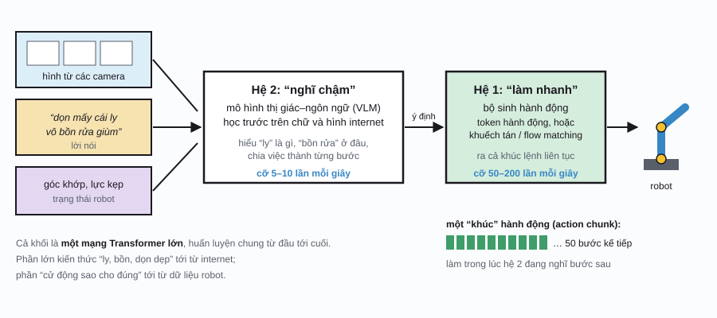
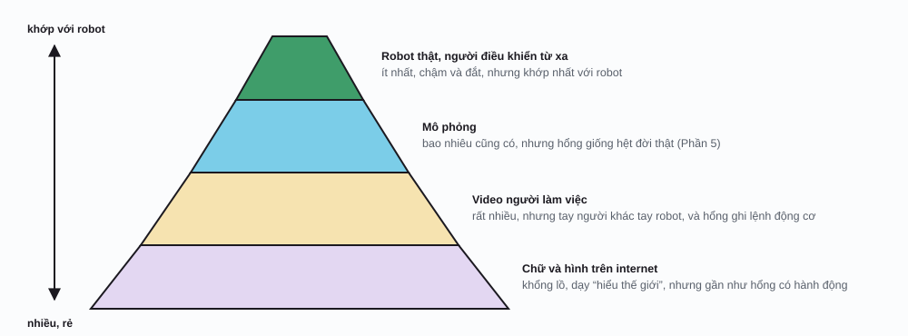
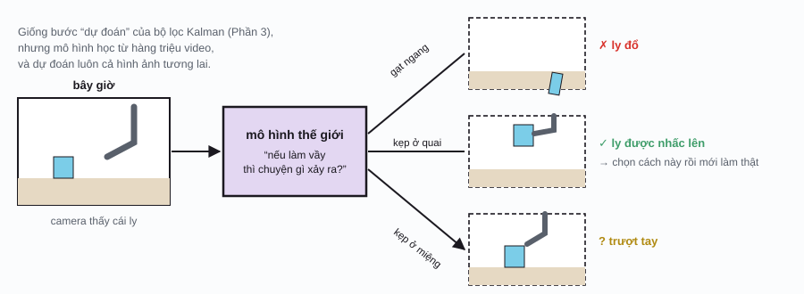

Robotics / Phần 6
Mô hình nền tảng cho robot
LLM học từ gần như toàn bộ chữ trên internet rồi làm được cả ngàn việc chưa ai dạy riêng. Liệu robot có thể có một “bộ não” kiểu vậy: một mô hình lớn, nghe lời nói, nhìn bằng camera, rồi điều khiển tay chân làm đủ thứ việc? Trang này kể chuyện cuộc đua đó, cập nhật tới tháng 10/2026. Đây là chương đổi lẹ nhất của module, nên tên mô hình và con số có thể cũ đi nhanh.
Từ LLM tới VLA
Ở module AI, bạn đã gặp VLM: mô hình nhận hình và chữ, trả lời bằng chữ. Thêm một bước nữa: thay vì trả lời bằng chữ, cho nó trả lời bằng lệnh điều khiển robot. Đó là mô hình thị giác–ngôn ngữ–hành động (vision-language-action model, VLA): nhận hình từ camera và một câu dặn bằng lời, xuất ra hành động cho robot, tất cả trong một mạng nơ-ron.
Cái hay nằm ở chỗ kiến thức thế giới đi kèm. Năm 2023, Google DeepMind giới thiệu RT-2: một VLM được huấn luyện thêm trên dữ liệu robot. Kết quả là robot làm được những lệnh hổng có trong dữ liệu robot nào, kiểu “dời lon nước ngọt tới tấm hình của ca sĩ Taylor Swift”, vì phần hiểu chữ, hiểu hình đã học sẵn từ internet. Robot học bắt chước ở Phần 5 chỉ biết đúng việc được dạy; VLA mang theo cả “hiểu biết chung” của mô hình ngôn ngữ.

Biến hành động thành token
Mô hình ngôn ngữ đọc và viết token (coi lại AI, Phần 2). Muốn nó “viết” ra hành động thì phải biến hành động thành token. Cách đơn giản nhất, RT-2 xài: chia mỗi con số (ví dụ tọa độ bàn tay) thành 256 “thùng”, mỗi thùng là một token. Mỗi bước điều khiển, mô hình viết ra vài token y như viết chữ.
Cách này có hai cái dở: tốn nhiều token (mỗi bước, mỗi chiều một token), và mấy token liền nhau gần như giống hệt nhau vì chuyển động thì mượt, nên mô hình học rất phí. Năm 2025, nhóm Physical Intelligence đề xuất FAST: lấy nguyên một khúc quỹ đạo, dùng biến đổi cosin rời rạc (discrete cosine transform, DCT), đúng phép biến đổi mà ảnh JPEG xài để nén hình, rồi chỉ giữ vài hệ số quan trọng làm token.
Biến hành động thành token
Chia thùng từng bước, hay nén cả khúc?Những điều có thể kiểm tra trên minh họa (đo với quỹ đạo “Gắp rồi đặt”, coi như tay dài 1 m):
- Nén DCT giữ 10 hệ số: chỉ 15 token, lệch trung bình cỡ 11 mm.
- Chia 32 thùng: 100 token mà còn lệch cỡ 14 mm. Phải lên 256 thùng mới xuống cỡ 2 mm, vẫn 100 token.
- Vẽ một đường ngoằn ngoèo, giật cục: DCT cần nhiều hệ số hơn hẳn mới theo kịp. Nén được là nhờ chuyển động thật thì mượt.
Cũng có nhiều mô hình hổng xài token cho hành động: chúng gắn thêm một bộ sinh hành động liên tục, dùng kỹ thuật khuếch tán hay flow matching (họ hàng của mô hình sinh ảnh ở AI, Phần 3), ra thẳng cả một khúc hành động (action chunk) vài chục bước một lượt. π0 (2024) của Physical Intelligence là ví dụ tiêu biểu.
Nghĩ chậm, làm nhanh
Có một mâu thuẫn: mô hình ngôn ngữ cỡ vài tỷ tham số chạy chậm, mỗi giây chỉ nghĩ được vài lần; còn tay robot thì cần lệnh mới cả trăm lần mỗi giây để mượt và an toàn (nhớ các vòng điều khiển ở Phần 2). Lời giải phổ biến là tách làm hai hệ, mượn ý tâm lý học “hệ 1 nhanh, hệ 2 chậm”:
- Hệ 2 là một VLM lớn: hiểu câu dặn, nhìn cảnh, quyết định bước kế tiếp. Chạy chậm.
- Hệ 1 là một mạng nhỏ, lẹ: nhận “ý định” từ hệ 2, cộng với hình và cảm biến mới nhất, ra lệnh liên tục cho động cơ.
Helix của công ty Figure (2025) chạy hệ 2 cỡ 7–9 lần mỗi giây và hệ 1 cỡ 200 lần mỗi giây trên robot hình người. GR00T N1 của NVIDIA (2025) cũng chia hai hệ như vậy, và là mô hình mở cho các hãng khác dùng.
Cơn khát dữ liệu
LLM có cả ngàn tỷ token chữ để học. Dữ liệu robot, tức những cặp “thấy gì, làm gì” ghi lại từ robot thật, thì ít hơn cả ngàn lần, vì phải có người ngồi điều khiển robot từng giờ một. Đây là nút thắt lớn nhất của ngành. Người ta gom dữ liệu từ đủ nguồn, mỗi nguồn một ưu một khuyết:

Vài cách đang được xài:
- Gom chung dữ liệu nhiều loại robot. Dự án Open X-Embodiment (2023) gộp dữ liệu từ 22 loại robot của nhiều phòng thí nghiệm, và cho thấy mô hình học chung nhiều “thân xác” thì làm tốt hơn học riêng từng con.
- Robot đi làm thật, vừa làm vừa học. Tháng 11/2025, Physical Intelligence công bố π*0.6 với cách huấn luyện RECAP: kết hợp dữ liệu làm mẫu, lời sửa của người khi robot sai, và học tăng cường từ chính những lần robot tự làm. Trên mấy việc khó nhất, cách này tăng số việc làm được mỗi giờ lên hơn gấp đôi và giảm tỉ lệ hỏng cỡ một nửa; có lần robot pha cà phê espresso liên tục từ 5 giờ rưỡi sáng tới 11 giờ rưỡi đêm. Đây là học tăng cường ở Phần 5, giờ chạy trên một mô hình nền tảng.
- Mô phỏng và mô hình thế giới để tạo thêm dữ liệu, như mục kế tiếp.
Mô hình thế giới: tưởng tượng trước khi làm
Trước khi nhấc cái ly, bạn “thấy trước” trong đầu: nắm quai thì chắc, gạt ngang thì đổ. Mô hình thế giới (world model) là mạng nơ-ron học được cái khả năng đó: cho nó cảnh hiện tại và một hành động định làm, nó đoán cảnh sẽ ra sao. Ý tưởng này quen thuộc từ đầu module: bước “dự đoán” của bộ lọc Kalman ở Phần 3 cũng là một mô hình thế giới, chỉ là do người viết công thức. Giờ người ta để mạng nơ-ron học nó từ hàng triệu video.

Mô hình thế giới xài được vô ba việc: lập kế hoạch (thử trong đầu trước khi làm), tạo dữ liệu huấn luyện (một kiểu mô phỏng học từ video, khỏi cần viết tay luật vật lý), và chấm điểm chính sách (cho robot “chạy thử” trong thế giới tưởng tượng thay vì ngoài đời). Vài cái tên đáng biết:
- V-JEPA 2 (Meta, 6/2025): học từ video là chính, rồi chỉ cần thêm 62 giờ dữ liệu robot từ bộ DROID là đủ để điều khiển một cánh tay robot gắp đặt đồ vật trong môi trường mới mà khỏi huấn luyện thêm.
- Genie 3 (Google DeepMind, 8/2025): tạo ra thế giới 3 chiều tương tác được từ một câu mô tả. Đầu năm 2026, Waymo dựa trên nó để làm mô hình thế giới mô phỏng cho xe tự lái.
- Cosmos (NVIDIA): họ mô hình thế giới mở, dùng để mô phỏng cho robot và xe tự lái.
Robot hình người
Sao lại làm robot giống người, trong khi bánh xe đi lẹ hơn chân, kẹp hai ngón thì rẻ hơn bàn tay năm ngón? Vì thế giới được xây cho người: cầu thang, tay nắm cửa, kệ bếp, dụng cụ. Và vì hàng tỷ video người làm việc trên internet dễ “chuyển” qua cho robot có thân hình giống người. Nhưng robot hình người cũng gom đủ mọi cái khó của sáu phần: giữ thăng bằng (Phần 2), biết mình ở đâu (Phần 3), tìm đường (Phần 4), và khéo tay (Phần 5, 6).
Tình hình tới tháng 10/2026, theo các nguồn tin công khai:
- Trong nhà máy, kho hàng: robot của Figure làm thử ở các nhà máy BMW; robot Digit của Agility Robotics làm theo hợp đồng thương mại ở kho hàng của GXO. Tesla thử robot Optimus trong nhà máy của chính hãng, chưa bán ra ngoài.
- Trong nhà: công ty 1X mở bán trước robot NEO từ 28/10/2025, giá 20 000 đô la Mỹ hoặc thuê 499 đô mỗi tháng. Nhà máy của 1X ở Hayward, California khai trương ngày 30/4/2026 với công suất 10 000 robot mỗi năm; mấy con đầu tiên được đưa đi thử nghiệm nội bộ, và hãng hẹn giao cho khách ở Mỹ trong năm 2026. Tới giữa năm 2026 chưa thấy xác nhận độc lập nào về việc đã giao tới tay khách. NEO lúc đầu hổng tự làm hết mọi việc: việc khó thì một nhân viên của hãng có thể điều khiển từ xa, và những lần đó thành dữ liệu cho robot học tiếp (đúng tinh thần DAgger ở Phần 5).
Còn xa cỡ nào?
Video robot gấp áo, pha cà phê coi rất ấn tượng, nhưng còn mấy cái khó lớn:
- Độ tin cậy. Thành công 95% nghe cao, nhưng robot làm 100 việc mỗi ngày thì ngày nào cũng hỏng 5 việc. Một chiếc máy rửa chén mà cứ 20 lần lại làm bể chén thì hổng ai xài.
- An toàn. Robot nặng mấy chục ký, cử động mạnh, làm việc kế bên con nít và thú cưng. Mô hình lớn thì khó chứng minh “hổng bao giờ làm bậy”, nên các lớp an toàn kiểu cũ (giới hạn lực, vùng cấm, nút dừng khẩn cấp) vẫn phải có.
- Giá và độ bền. Động cơ, bàn tay, pin vẫn đắt, và hư hỏng ngoài đời nhiều hơn trong phòng thí nghiệm.
- Đo cho đúng. Mỗi hãng tự quay video, tự chấm điểm. So sánh công bằng giữa các robot còn rất khó.
Từ điển nhỏ
| Thuật ngữ | Tiếng Anh | Nói đơn giản |
|---|---|---|
| Mô hình nền tảng | foundation model | Mô hình lớn học trước trên dữ liệu khổng lồ, rồi dùng cho nhiều việc. |
| Mô hình thị giác–ngôn ngữ–hành động | vision-language-action model (VLA) | Nhìn hình, nghe lời, ra lệnh điều khiển robot. |
| Token hành động | action token | Hành động được mã hóa thành token như chữ. |
| Biến đổi cosin rời rạc | discrete cosine transform (DCT) | Tả một đường cong bằng tổng các sóng cosin; giữ sóng chậm để nén. |
| Khúc hành động | action chunk | Cả loạt lệnh cho vài chục bước kế tiếp, ra một lượt. |
| Hệ 1 / hệ 2 | System 1 / System 2 | Phần phản ứng nhanh / phần suy nghĩ chậm trong một robot. |
| Dữ liệu nhiều thân xác | cross-embodiment data | Dữ liệu gom từ nhiều loại robot khác nhau. |
| Mô hình thế giới | world model | Mạng đoán thế giới sẽ ra sao nếu làm một hành động. |
| Robot hình người | humanoid robot | Robot có thân, hai tay, hai chân như người. |
Phụ lục: ký hiệu và đơn vị
Trang này gần như hổng có công thức; dưới đây là vài đơn vị và cách viết hay gặp.
| Ký hiệu | Đọc (tiếng Anh) | Ý nghĩa, nói đơn giản |
|---|---|---|
| Hz | hertz | Số lần mỗi giây; 200 Hz là 200 lần mỗi giây. |
| B (trong “7B”) | billion | Tỷ tham số; mô hình 7B có cỡ 7 tỷ con số học được. |
| π0, π*0.6 | pi zero, pi star zero point six | Tên các mô hình của công ty Physical Intelligence. |
| N, K | N, K | Trong minh họa: số thùng, và số hệ số DCT giữ lại. |
Lịch sử
- 2022
SayCan và RT-1
Google cho mô hình ngôn ngữ chọn kỹ năng có sẵn cho robot làm theo lời dặn (SayCan), rồi giới thiệu RT-1, một Transformer điều khiển robot học từ cỡ 130 ngàn lần làm mẫu.
- 2023
RT-2 và Open X-Embodiment
RT-2 biến hành động thành token và mang kiến thức internet vào robot. Bộ dữ liệu Open X-Embodiment gộp 22 loại robot từ nhiều phòng thí nghiệm.
- 2024
OpenVLA và π0
OpenVLA là VLA mã nguồn mở cỡ 7 tỷ tham số. Physical Intelligence ra π0 với bộ sinh hành động liên tục kiểu flow matching.
- 2025
Bùng nổ VLA và mô hình thế giới
FAST (1), Helix của Figure (2), Gemini Robotics và GR00T N1 (3), V-JEPA 2 (6), Genie 3 (8), 1X mở bán trước NEO (10), π*0.6 học từ kinh nghiệm thật (11).
- 2026
Ra khỏi phòng thí nghiệm
1X khai trương nhà máy NEO (4); Google DeepMind công bố Gemini Robotics 2 điều khiển cả thân robot hình người (7).
Tài liệu tham khảo
- A. Brohan et al., “RT-2: Vision-Language-Action Models Transfer Web Knowledge to Robotic Control”, 2023. arXiv:2307.15818.
- Open X-Embodiment Collaboration, “Open X-Embodiment: Robotic Learning Datasets and RT-X Models”, 2023. arXiv:2310.08864.
- M. J. Kim et al., “OpenVLA: An Open-Source Vision-Language-Action Model”, 2024. arXiv:2406.09246.
- K. Black et al., “π0: A Vision-Language-Action Flow Model for General Robot Control”, 2024. arXiv:2410.24164.
- K. Pertsch et al., “FAST: Efficient Action Tokenization for Vision-Language-Action Models”, 2025. arXiv:2501.09747.
- Physical Intelligence, “π*0.6: a VLA That Learns From Experience”, 2025. arXiv:2511.14759.
- M. Assran et al., “V-JEPA 2: Self-Supervised Video Models Enable Understanding, Prediction and Planning”, 2025. arXiv:2506.09985.
- Google DeepMind, Gemini Robotics 2 brings whole body intelligence to robots, 30/7/2026.
- 1X Technologies, 1X Opens NEO Factory in Hayward, CA, thông cáo báo chí, 30/4/2026.